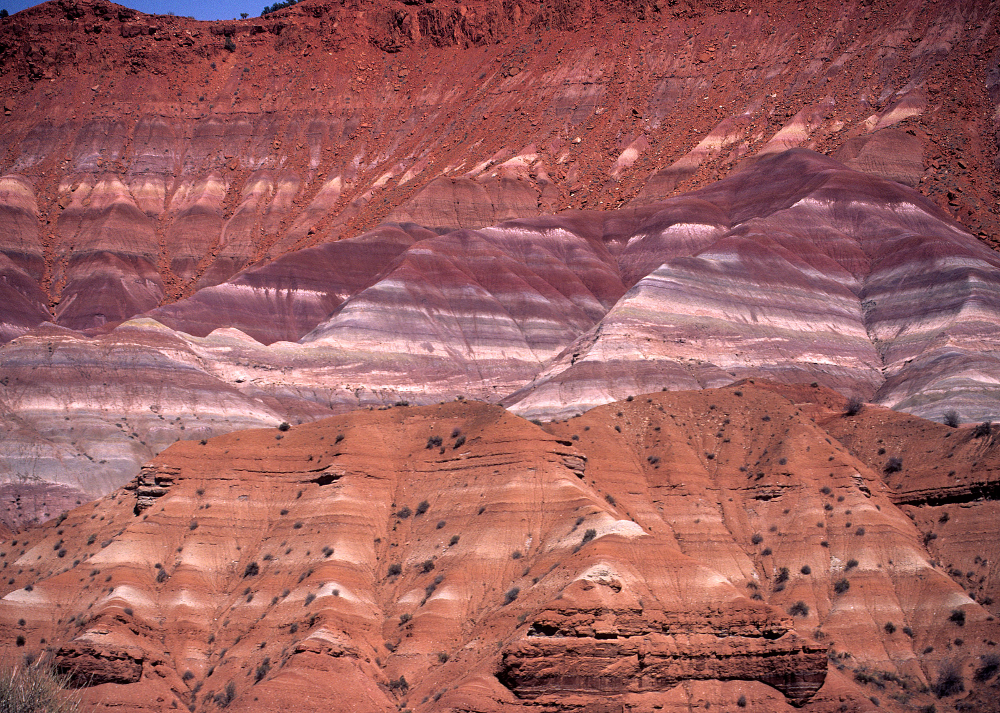

|  |
Grand Staircase National Monument
By Leia Reclusado
Grand Staircase-Escalante National Monument spans across nearly 1.87 million acres of America's public lands in southern Utah.
From its spectacular Grand Staircase of cliffs and terraces, across the rugged Kaiparowits Plateau to the wonders of the Escalante River Canyons, the Monument is a diverse geologic treasure speckled with monoliths, slot canyons, natural bridges, and arches.
Due to its remote location and rugged landscape, the monument was one of the last places in the continental United States to be mapped. |